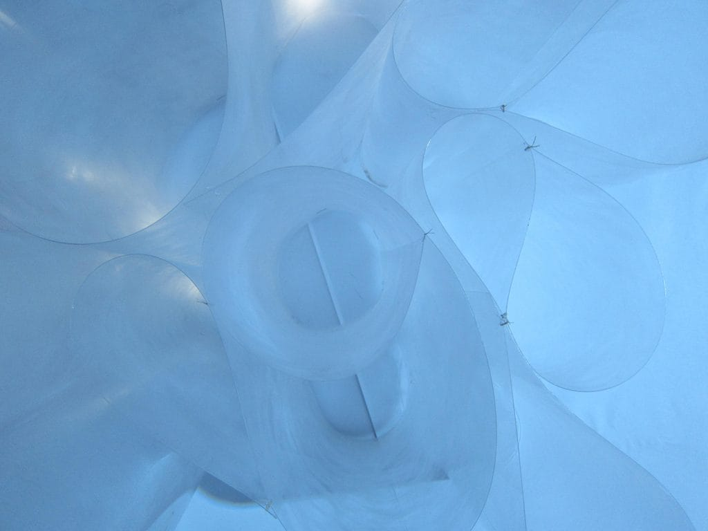
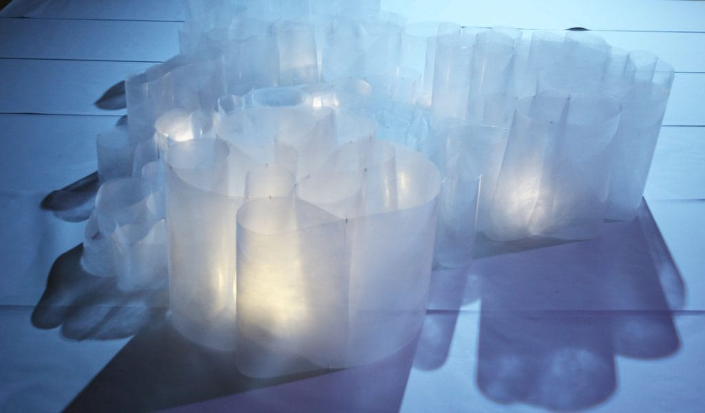
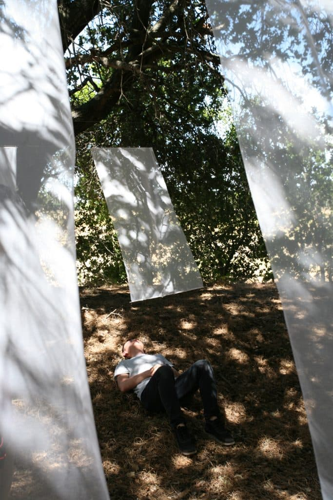
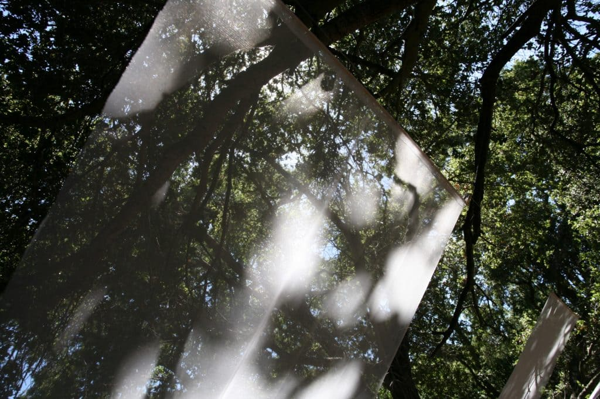
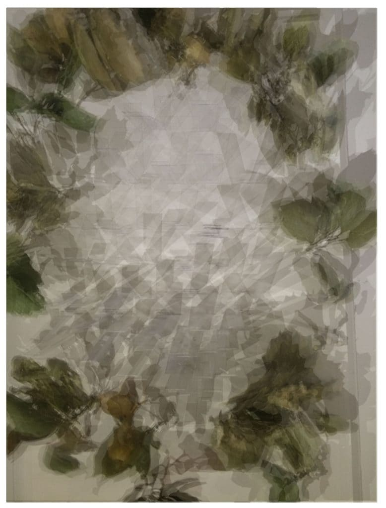
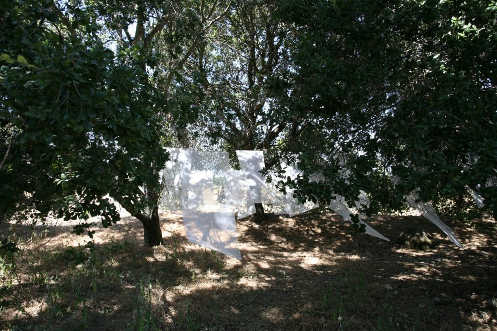

LIGHT/SPACE






Team 1
Veronica Stamats
Team 2
Courtney Urbancsik, Junha Hwang, Royce Wang
LIGHT/SPACE
SAN FRANCISCO, CA
The final project for a course taught during Spring 2016 asked students to explore the materialization of light through a full scale installation. “Phenomenal Landscape”, by Veronica Stamats, was installed in a clearing near Lake Lagunitas. The field of floating mesh “sheets” captured the light falling through the tree canopy through a series of “cuts”, while spatially transitioning between the density of the trees to the openness of the lake. “Ephemeral Viscosity”, completed by a team of 3 students, was inspired by the
evanescent nature of vapor. Flexible polycarbonate sheets of varying heights were sanded, looped and stitched together with thread. The folded surfaces together formed an undulating mass, which when illuminated from within with LED lights, evoked the form and qualify of fog found in Bay Area.
© 2023 BACH ARCHITECTURE. All rights reserved. | 3752 20th Street, San Francisco, CA 94110 | (415) 425-8582 | info@bach-architecture.com